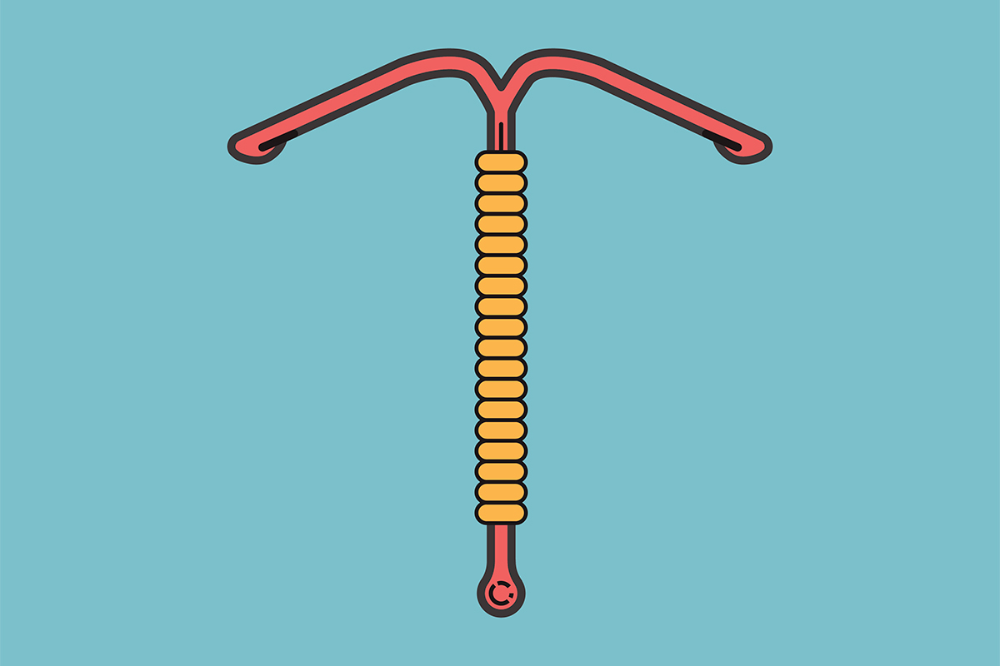

¿Que pasa si me olvido de tomarla un día?
Metodos Anticonceptivos para Mujeres
¿Qué debo hacer si se me olvida de tomar la píldora un día?
Si te olvidaste de tomar un comprimido activo (no placebo) puede que la protección frente al embarazo disminuya. Es importante el tiempo que haya pasado desde que te das cuenta del olvido. Si el retraso es menor de 12 horas en la toma de algún comprimido, la protección frente al embarazo no disminuye. Debes tomar el comprimido en cuanto te des cuenta del olvido, y los comprimidos siguientes a la hora habitual. Si el retraso de la toma es mayor de 12 horas, la protección frente al embarazo puede reducirse. En este caso debes consultar con tu médico posibles riesgos y recomendaciones. Cuantos más comprimidos haya olvidado, existe más riesgo de que pueda quedarse embarazada.

¿Puedo tomar cualquier pastilla?
No. Existen diversas composiciones y depende de la historia clínica de la paciente. Como todas las medicaciones pueden presentar algunos efectos secundarios por lo que es importante visitar al especialista para que indique la más apropiada.
¿Tomando pastilla debo cuidarme con otro método?
Los anticonceptivos tomados correctamente protegen de los embarazos no deseados, pero no de enfermedades de transmisión sexual por lo que en relaciones de riesgo se recomienda siempre el uso de preservativo.
¿Cual es el porcentaje de protección que pueden llegar a tener las pastillas?
Si tomas las pastillas anticonceptivas exactamente como te lo indican, estas tienen una eficacia del 99 por ciento en la prevención de un embarazo, pero no de una transmisión sexual.
Tome antibiótico y utilizo la píldora,¿puedo embarazarme?
Algunos medicamentos pueden provocar que los anticonceptivos orales pierdan su efecto anticonceptivo, o pueden causar sangrados inesperados. Por eso es importante que informes a tu medico sobre los medicamentos que estas tomando. El te indicara si necesitas otras precauciones anticonceptivas adicionales (por ejemplo preservativo), mientras dure el tratamiento con antibióticos u otros fármacos.
¿Es doloroso colocar el DIU?
Depende del umbral del dolor de cada paciente. Algunas mujeres experimentan dolor y mareo después de la inserción. Pero estos episodios son de breve duración.
¿Qué pasa si el parche se despega total o parcialmente?
Si el parche se ha despegado total o parcialmente intenta pegarlo y si no pega debes aplicar uno nuevo lo antes posible, en un periodo inferior a las 24 horas.
Si pasaron más de 24 horas, o no sabe el tiempo transcurrido, existe riesgo de embarazo. Debes parar el ciclo anticonceptivo actual y comenzar inmediatamente un nuevo ciclo colocándote un parche nuevo. Debes utilizar preservativo durante los primeros 7 días del nuevo ciclo.
Vomité después de tomar la píldora ¿Qué debo hacer?
Si tienes vómitos en las 3-4 horas siguientes a la toma de un comprimido activo o padeces diarrea intensa, hay un riesgo de que los principios activos del anticonceptivo no sean absorbidos totalmente por el organismo. La situación es casi equivalente al olvido de un comprimido. Tras los vómitos o la diarrea, vuelve a otro comprimido activo, de un envase de reserva, lo antes posible. Si es posible tómalo dentro de las 12 horas posteriores a la hora habitual en que sueles hacerlo. Si esto no es posible o han transcurrido más de 12 horas debes consultar con tu medico.